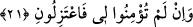

olan(Allâh)a sığındım.”
“Ben, beni taşla(yıp öldür)menizden” ona sığınıp tevekkül ettim “benim de Rabbim,
sizin de Rabbiniz olan” Recm taşlamak demektir. Yahut beni darp ederek yahut büyücü
vs. gibi kötü söz söyleyerek bana işkence etmenizden yahut beni öldürmenizden
“(Allâh)a sığındım.” Beni sizin şerrinizden koruyacak olan ancak O’dur.
Denildi ki Hz. Mûsâ (a.s.) onlara “Allah’a karşı ululanmayın” deyince onlar Hz.
Mûsâ’yı (a.s.) ölümle tehdid ettiler.
et-Te’vîlâtü’n-Necmiyye’de şöyle denilmektedir: Ben kendi nefsimin şerrinden
Rabbime sığındım ve sizin nefsinizin şerrinden bana bir takım fitne, isnâd ve
iftirâlarınızdan da sizin Rabbinize sığındım.
21. “Eğer bana inanmadınızsa bari ben(im yolum)dan çekilin.”
Îman kelimesi iz’ân ve kabâl mânâsı itibâriyle “lâm”, îtirâf mânâsıyla da “bâ” ile
müteaddî olur. Ona inandı sözünün hakîkati haberciyi yalanlayıp ona muhâlefet
etmeyeceği konusunda ona güven verdi demektir.
İbn Şeyh şöyle demiştir: Buradaki lâm ecl mânâsındadır. Size getirmiş olduğum
delilden dolayı demektir. Mânâ şudur: Şâyet aklınıza güvenerek kibirlenir, beni tasdik
etmezseniz, hiç değilse yolumdan çekilin, benim aleyhimde yahut lehimde olmayın, bana
eliniz yahut dilinizle bir eziyet ve kötülükte bulunmayın. Sizi, kurtuluşunuzun bulunduğu
işlere dâvet eden birine verilmesi gereken karşılık bu değildir. Burada bedenen ve
fiziken bir ayrılık söz konusu olmayıp bu tâbir terk etmekten kinâye olarak, beni kendi
hâlime bırakın demektir.
Mûtezile’nin sonraki dönem âlimlerinden Kadı Abdülcebbar şöyle demiştir:
Kur’ân’da îtizâl kelimesinin bulunduğu her yerde bundan murâd bâtıldan ayrılmaktır. Bu
sûretle îtizâl ismi Mûtezile için bir medih ve övgü sayılır. Ancak bu görüş burada
îzâhını yapmaya çalıştığımız “Eğer bana inanmadınızsa bari ben(im yolum)dan
çekilin” âyetiyle bozulmuştur. Çünkü burada îtizâlden kasd edilen îmandan ayrılmaktır
ki, bu da küfrün ta kendisidir. Yoksa küfür ve bâtıldan ayrılık murâd edilmemiştir. Bazı
kelâm kitaplarında da böyledir. Allah Teâlâ bu âyetle zıt ve muhâlif insanlardan
ayrılmanın vâcib olduğunu haber vermektedir.
Denilmiştir ki Cüneyd-i Bağdâdi (k.s.) hazretlerinin arkadaşlarından bazıları
aralarında geçen bir meseleden dolayı Cüneyd hazretlerine muhâlif düştüler. Bu
muhâlifler o meselede Cüneyd ile münâzara etmek için ona bir mektup gönderdiler.
Adam Cüneyd hazretlerinin yanına girince Cüneyd adama: “Ey falan adam! “Eğer bana